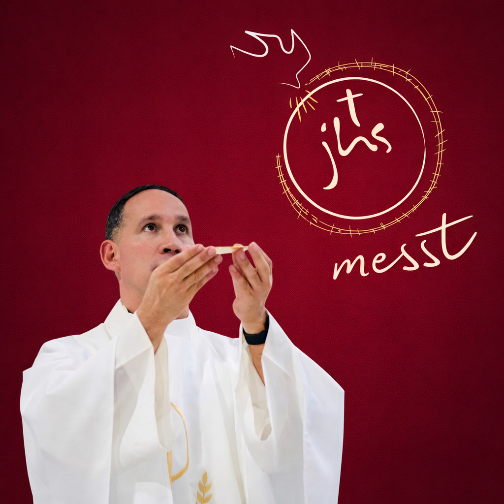
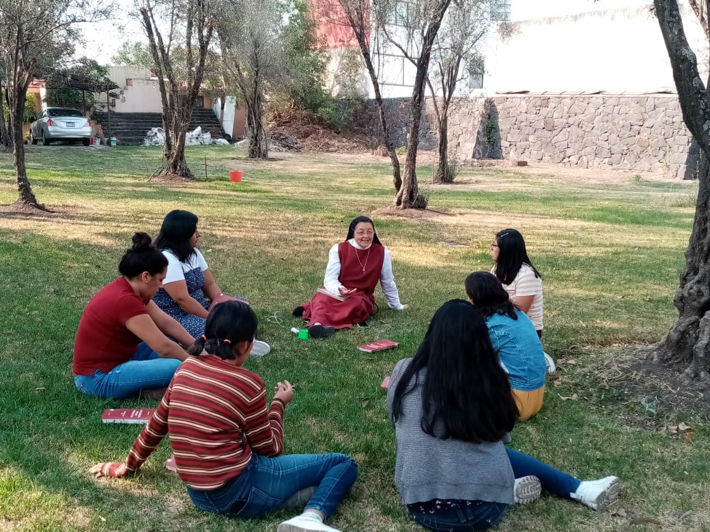
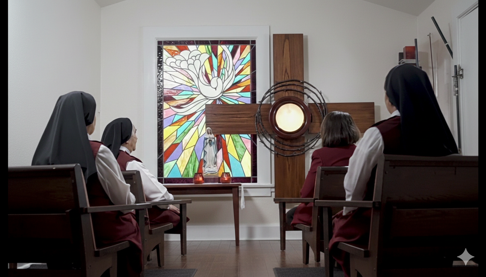
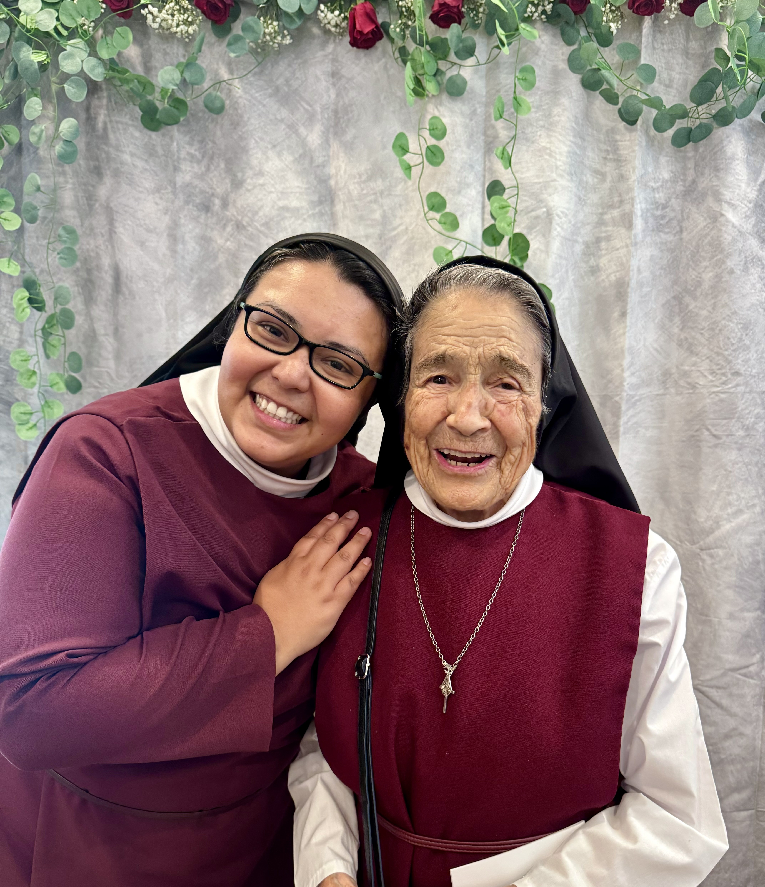

"But the hour is coming, and is now here, when true worshipers will worship the Father in Spirit and truth; and indeed, the Father seeks such people to worship him." Jn 4:23

"Make your life a Mass, and your Mass a life"
Fr. Pablo Marís Guzmán MSpS
Welcome to our community
We are committed to serving God by imitating Christ, drawing strength from the Eucharist in every aspect of our lives, and spreading joy throughout the world.

Mission
A missionary cannot reserve anything because they burn with zeal for the salvation of souls.
Mother Enriqueta Rodríguez Noriega, MESST

Gratitude
Jesus loves us through the Priesthood; Jesus loves us from the Eucharist, the very language of love.
Fr. Pablo María Guzmán, MSpS.

Joy
Carry the joy of the Holy Spirit within your hearts and go forth to share it with the many souls who are burdened by sadness because they have not yet encountered the love of God.
Fr. Pablo María Guzmán, MSpS.
IS GOD CALLING YOU?
"Have you ever wondered if offering your life to Christ in service of others is worth it?"
Join us